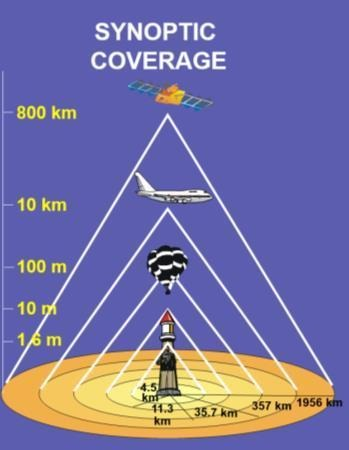
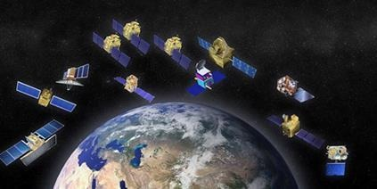
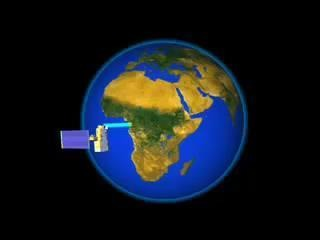
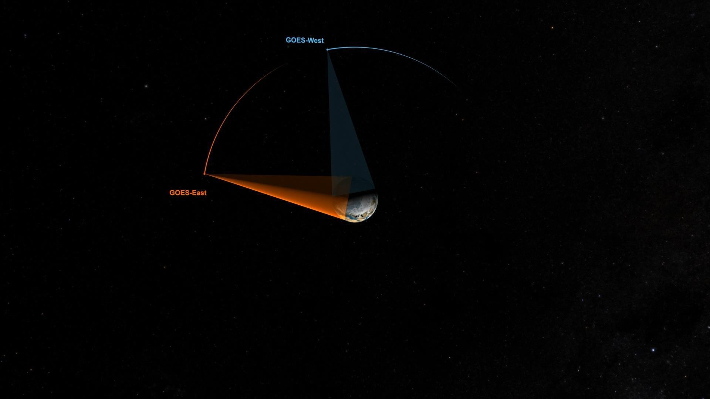
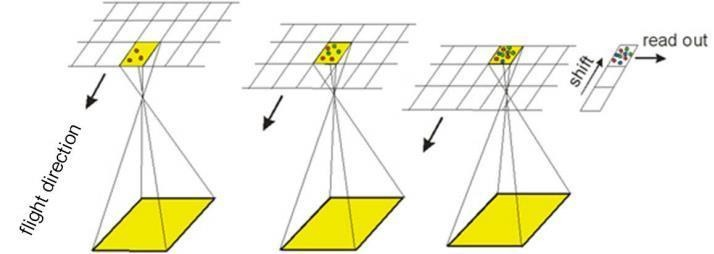

A satellite's orbit decides what it can see, how often, and at what time of day — before a single photon is even captured. Get the orbit wrong for your application and no amount of clever image processing will fix it.
Almost every Earth-observation satellite uses one of two orbit families: low-altitude polar/sun-synchronous orbits, or very-high-altitude geostationary orbits directly above the equator.
They solve opposite problems. Polar orbits give you high spatial resolution and full global coverage over days/weeks. Geostationary orbits give you the same view, continuously, forever — perfect for watching a storm develop hour by hour, useless for mapping fine detail.
Orbit altitude and inclination are chosen so gravity balances the satellite's speed at the right period — 90 minutes at 700–800 km (polar), or exactly 24 hours at ~36,000 km (geostationary, matching Earth's own rotation so the satellite appears fixed).



The satellite orbits north-south at 700-800 km altitude while Earth rotates beneath it (west-east). Because the Earth turns continuously, each polar pass cuts across a new strip of longitude. It crosses the equator at ~10:30 AM local solar time every orbit, ensuring consistent sun illumination shadows across the globe.

Swing a ball on a string: a short string whips around fast, a long string swings slowly. Orbits work the same way — altitude is the "string length." Fly low (short string) and you race around Earth in 90 minutes. Fly all the way out to 36,000 km (a very long string) and it takes a full 24 hours to go around once — which happens to exactly match how long Earth takes to spin once, which is the whole trick behind a geostationary satellite appearing to "hover."
Swath: The strip of Earth's surface imaged in one pass. Revisit Time: Time between two images of the same area. Repeat Cycle: Time between two identical orbits. Inclination: Angle between the orbital plane and the equator — polar orbit inclination sits between 80° and 100°. Period: Time for one full orbit.
Measures radiant energy reflected or emitted by the Earth-atmosphere system. Relies on sunlight — only works during daytime and can be blocked by clouds.
Converted to bio-geophysical quantities like temperature, precipitation, and soil moisture.
Provides its own energy source. Mostly microwave — penetrates clouds and works day or night.
Applications include meteorology, surface elevation mapping, ocean wind speed measurement.
Once a satellite is in the right orbit, it still needs to build a 2D image line by line as it flies forward. Two mechanisms dominate — the difference matters for reliability and image quality.
A single detector (or small bank) sweeps side-to-side across track via an oscillating/rotating mirror, building the image line by line as the satellite flies forward.
A stationary linear array of thousands of CCD detectors captures the entire cross-track line simultaneously. Forward satellite velocity provides along-track scan without moving mirrors.

Whisk-broom mirrors that wear unevenly cause line striping / banding — a systematic radiometric error you'll learn to correct in IP.2. Push-broom sensors instead suffer from individual dead or miscalibrated detector elements, causing line dropout. Knowing which scanning mechanism produced your image tells you which correction to expect.